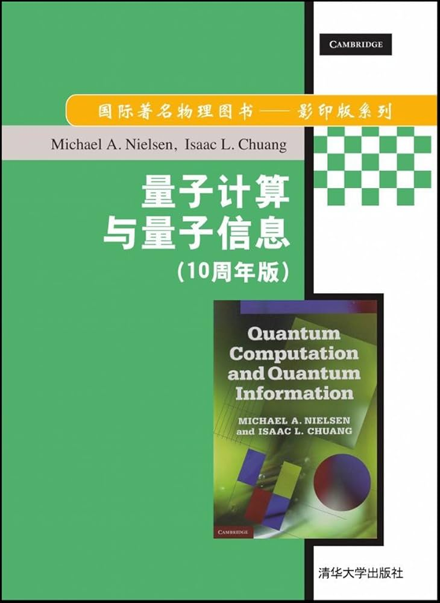

📖《量子计算与量子信息》是量子计算领域的奠基之作，被誉为该领域的"圣经"。书中系统讲解了量子计算和量子信息的理论基础，从量子比特到量子算法，从量子纠错到量子通信。
量子计算的启蒙教材，适合非物理专业的计算机人士。
这本书是计算机专业背景的读者学习量子计算的最佳起点。作者 Nielsen 和 Chuang 深知读者可能没有深厚的物理基础，因此在讲解量子力学概念时非常注重直觉理解，避免陷入物理细节。
书中最精彩的部分是对量子算法的讲解。Shor算法如何分解大数、Grover算法如何搜索无序数据库，这些看似神奇的算法被一步步拆解，让读者理解它们为什么能超越经典计算机。量子纠错和量子信息的部分也非常精彩，揭示了量子计算面临的根本挑战。随着量子计算机逐渐走向实用，这本书的价值只会越来越高。